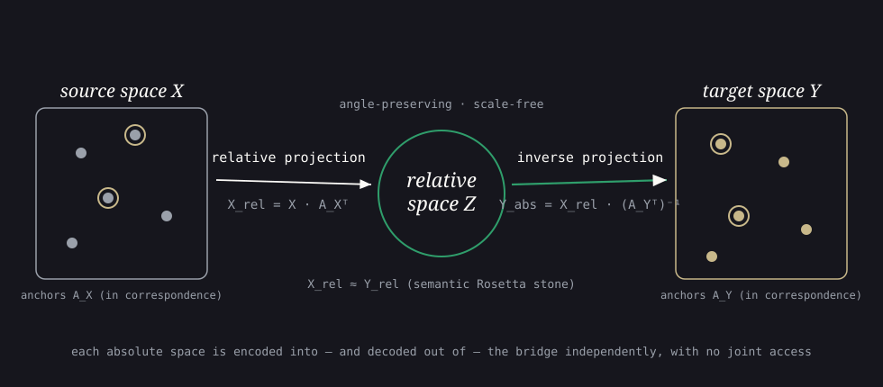

Latent Space Translation via Inverse Relative Projection
Inverting the relative representation turns the shared angle-only space into a reusable bridge, letting any pre-trained encoder be zero-shot stitched onto any other model’s classifier — even across modalities.
Independently trained neural models tend to learn the same latent manifold up to a transformation. Relative representations expose that shared structure by re-expressing each embedding through its angles to a set of anchors, but this projection throws away scale and is not injective, so it cannot be undone. This work formalizes the inverse of the angle-preserving relative projection and, assuming the scale invariance of softmax-based decoders, uses the relative space as an intermediary: any absolute space can be independently projected onto the bridge and back out into any other semantically similar space. The result is Inverse Relative Projection (IRP), a zero-shot way to translate between latent spaces of arbitrary (and differing) dimensionality and to stitch arbitrary pre-trained text and image encoders onto independently trained classifiers, even across modalities.
Overview
Independently trained neural networks tend to recover the same latent manifold for semantically similar data — a regularity now described under several names, from the manifold hypothesis to the Platonic Representation Hypothesis (Huh et al. 2024). The catch is that each model expresses that shared structure in its own absolute coordinate system, so two functionally equivalent encoders typically differ by an unknown transformation (a rotation, reflection, and rescaling) that blocks any direct reuse of one model’s components inside another.
Relative representations (Moschella et al. 2023) sidestep this by re-encoding every point through its angles to a fixed set of anchor samples, yielding a coordinate-free space in which semantically similar models line up. This is a powerful bridge, but it is a one-way street: the projection discards scale and is non-injective, so the original absolute space cannot be recovered from it. This paper’s core contribution is to formalize and stabilize the inverse of that projection — Inverse Relative Projection (IRP) — turning the relative space into a true intermediary that any absolute space can be independently mapped onto and out of.

From a one-way projection to a reversible bridge
A relative representation (Moschella et al. 2023) is built by L2-normalizing each latent vector and each anchor, then taking inner products against the anchor set \mathbf{A}_{\mathcal{X}}:
\mathbf{X}_{rel} = \mathbf{X}_{abs}\,\mathbf{A}_{\mathcal{X}}^\top ,
which records only the relative angles between points and discards their scale. Different latent spaces of the same data are known to differ approximately by an isometry plus local rescaling (Moschella et al. 2023; Maiorca et al. 2023), so the relative code of one encoder closely matches that of another, \mathbf{X}_{rel} \approx \mathbf{Y}_{rel}.
The key observation is that this projection is non-injective — it collapses many absolute spaces onto one relative space. IRP exploits exactly that by inverting the anchor matrix of a chosen target space \mathcal{Y} to decode the shared relative code back into \mathcal{Y}’s own coordinates:
\mathbf{Y}_{abs} = \mathbf{X}_{rel}\,(\mathbf{A}_{\mathcal{Y}}^\top)^{-1}.
The source anchors are used to encode into the bridge and the target anchors to decode out of it; the only requirement is that the two anchor sets be in semantic correspondence — the partial dictionary that lets the two spaces talk, much like a Rosetta stone (Norelli et al. 2023). Crucially, encoding and decoding are independent, so the source and target spaces of different dimensionality can be translated without ever being held jointly.
Making the inverse stable
Inverting a small anchor matrix is delicate: a reduced set of anchors drawn from a low-dimensional data manifold tends to be highly correlated, producing an ill-conditioned matrix. The paper introduces three complementary stabilizers, all parameter-free at inference:
- Anchor pruning — greedy farthest-point sampling under a sign-insensitive cosine distance selects a maximally orthogonal subset of anchors, governed by a pruning threshold \delta; higher \delta lowers the condition number and stabilizes the inverse.
- Anchor subspaces — pruning is repeated with \omega different random seeds, each subspace reconstructs the absolute space independently, and the results are average-pooled in a parameter-free ensemble, recovering the coverage lost to pruning.
- Anchor completion — re-expresses the anchors in the canonical basis so the point dimensionality is preserved through the round trip.
The authors report that, on a hyperparameter sweep over the relative inversion, having a stable inverse matters more than having many anchors: the best performance comes from few anchors with a low condition number. Across the sweep, reconstruction similarity and downstream accuracy are strongly correlated (Pearson 0.7), and the condition number tracks the post-pruning anchor count (Pearson 0.93).
Why ignoring scale is safe: decoder scale invariance
The relative projection throws away scale, so IRP can only work if the downstream decoder does not care about scale either. The paper makes this assumption explicit and tests it. For a linear classifier, a rescaling factor \alpha factors straight out of the layer, \mathbf{y} = \alpha\mathbf{W}\mathbf{x} + b, so it is equivalent to changing the softmax temperature and leaves the predicted class unchanged. For non-linear networks the claim is empirical: MLPs with monotone activations that do not flip sign (ReLU, tanh) stay essentially invariant across rescaling factors, while a cosine activation is invariant only near the mean data scale and its periodic cycles. The same positive scale invariance is observed inside a large pre-trained model — rescaling the intermediate encodings of RoBERTa barely moves a downstream classifier’s accuracy (its un-rescaled accuracy is reported as 0.92). Finally, the embedding scales of real encoders are shown to follow a well-behaved single-mode Gaussian, which is what makes “rescale to the mean scale” a safe operation.
Translating across languages
A first test reconstructs embeddings across languages. Using parallel sentences from WikiMatrix (Schwenk et al. 2021), each sentence is encoded by a language-specific RoBERTa-style model (Liu et al. 2019) and the task is to translate a monolingual encoding in one language into the corresponding monolingual encoding in English. IRP is compared against the original absolute encodings and against the embeddings of a multilingual model, XLM-R (Conneau et al. 2020), with cosine similarity to the target as the score.
| Enc. | Dec. | Absolute | XLM-R | IRP |
|---|---|---|---|---|
| en | en | 1.00 | 1.00 | 0.97 |
| es | en | 0.00 | 0.99 | 0.97 |
| fr | en | -0.02 | 0.99 | 0.97 |
| ja | en | 0.03 | 0.99 | 0.97 |
The raw absolute encodings of different languages are essentially uncorrelated (near 0.00), yet IRP recovers a similarity of 0.97 in every language pair — on par with the purpose-built multilingual XLM-R encoder, despite operating zero-shot on independently trained monolingual models.
The relative space as a stitching bridge
The headline application combines the reversible bridge with decoder scale invariance to perform zero-shot stitching: take an encoder trained independently from a classification head and feed one into the other without any fine-tuning. Each encoder is independently translated through the relative space into the absolute space the classifier expects. Unlike earlier relative- representation stitching, IRP does not require the classifier to have been trained on relative representations, and because the bridge is shared rather than target-conditioned, every absolute space is encoded and decoded independently.
| Domain | Dataset | \omega | \delta | zero-shot | absolute | non-stitch | available |
|---|---|---|---|---|---|---|---|
| Vision | MNIST | 8 | 0.65 | 0.88 \pm 0.03 | 0.10 \pm 0.03 | 0.97 \pm 0.01 | 20 |
| Vision | F-MNIST | 8 | 0.65 | 0.82 \pm 0.03 | 0.10 \pm 0.02 | 0.91 \pm 0.01 | 20 |
| Vision | CIFAR-10 | 8 | 0.75 | 0.92 \pm 0.05 | 0.11 \pm 0.04 | 0.95 \pm 0.03 | 20 |
| Vision | CIFAR-100 (coarse) | 8 | 0.70 | 0.72 \pm 0.10 | 0.05 \pm 0.01 | 0.88 \pm 0.05 | 20 |
| Vision | CIFAR-100 (fine) | 8 | 0.75 | 0.62 \pm 0.09 | 0.01 \pm 0.00 | 0.82 \pm 0.07 | 20 |
| NLP | TREC | 8 | 0.70 | 0.73 \pm 0.09 | 0.22 \pm 0.06 | 0.87 \pm 0.04 | 20 |
| NLP | N24News | 8 | 0.65 | 0.55 \pm 0.10 | 0.05 \pm 0.01 | 0.70 \pm 0.07 | 20 |
Raw absolute stitching sits at chance level (around 0.10 for the 10-class vision tasks), confirming that independently trained spaces are not directly compatible. IRP closes most of the gap to the non-stitch upper bound — e.g. 0.92 vs. 0.95 on CIFAR-10 — while, unlike absolute stitching, working between encoders of arbitrary and differing embedding dimensionality so it can always stitch all available pairs.
Across modalities
A final experiment pushes the bridge between modalities, stitching text and image encoders on the multimodal N24News dataset. The translation remains zero-shot and yields usable accuracies even when the encoder and decoder live in different modalities (obtained with 1000 anchors, \omega=16, \delta=0.8). Consistent with prior observations (Maiorca et al. 2023), language models make stronger source spaces than vision encoders — the per-model end-to-end accuracies reported alongside the stitching matrix are 0.76 for RoBERTa, 0.71 for XLM-R, and 0.60 for Electra on the text side, versus 0.50, 0.50, 0.48, and 0.42 for the ViT-base, ViT-ResNet, ViT-small, and RexNet vision encoders.
Takeaways
By formalizing the inverse of the relative projection and pairing it with the scale invariance of softmax decoders and the well-behaved Gaussian scale distribution of real encoders, IRP turns the angle-only relative space into a genuine, reusable bridge between latent spaces. Because each absolute space is encoded into and decoded out of that bridge independently, models trained in isolation — across architectures, datasets, dimensionalities, and even modalities — can be translated and stitched zero-shot, without ever co-locating their latent spaces. The authors frame this as a step toward practical model compositionality and reuse, and are explicit about the open questions: how many anchors a task needs, what makes two spaces compatible (e.g. intrinsic dimension), the trade-off between anchor granularity and conditioning, and alternatives when parallel anchors are unavailable.
This is an arXiv preprint (arXiv:2406.15057, June 2024). The two figures on this page are schematics drawn by the editors of this page to illustrate the method; the original paper’s figures are not reproduced here. A copyable BibTeX entry for this page is generated below.
Citation
@misc{maiorca2024,
author = {Maiorca, Valentino and Moschella, Luca and Fumero, Marco and
Locatello, Francesco and Rodolà, Emanuele},
title = {Latent {Space} {Translation} via {Inverse} {Relative}
{Projection}},
date = {2024-06-21},
url = {https://arxiv.org/abs/2406.15057}
}